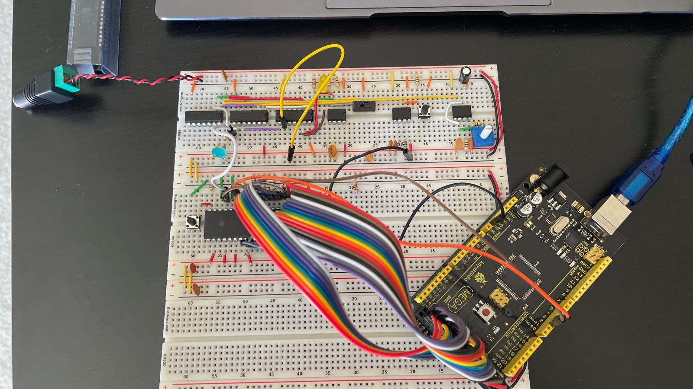
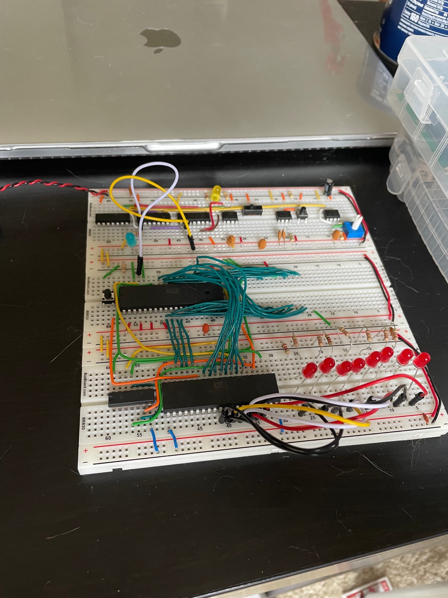
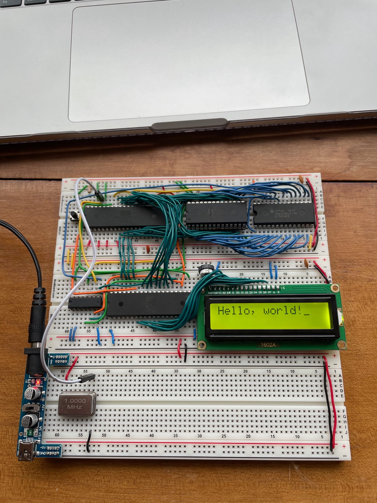

Instrument First: Ben Eater's 6502 on Breadboards
What's in the box
Ben Eater sells a kit that builds a working 6502 computer on breadboards. A WDC W65C02S for the processor, a 65C22 VIA for I/O, an AT28C256 EEPROM, 32K of static RAM, a 1602A character LCD, a 1 MHz oscillator can, three BusBoard BB830 breadboards, and a single 74HC00 quad NAND that handles all of the address decoding. The 6502 is the chip out of the Apple II and the C64 and the NES.
Not in the box: a power supply, an EEPROM programmer, or any way to see what the machine is doing. Ben sells the first two separately. For the third he points you at his clock module kit and an Arduino Mega, recommended “if you want to follow all of the experiments and debugging in the videos.”
I bought both and built them first.

Watching a CPU do nothing
The first step isn't a program. Run all eight data lines through 1k resistors so the bus reads $EA no matter what gets asked for. $EA is NOP. There's no ROM and no RAM on the board yet and it doesn't matter, because every address comes back “do nothing.” So the processor does nothing, forever. The program counter climbs, the address bus counts up through 64K, rolls over, and starts again.
The Mega has the pins to watch all sixteen address lines, all eight data lines and the read/write signal at once, and it prints a line to serial on every cycle.
The clock module is three 555 timers. One astable for free running, one monostable for a debounced manual pulse, one bistable to switch between them, with some 74LS logic combining the outputs. Speed pot, run/step slide switch, button. In step mode the machine moves one clock pulse per press.
I ran on that step clock for the whole build and only put the 1 MHz can in at the end.

Eight LEDs
The first stage that needs the thing to actually be a computer: a program sitting in the EEPROM, the VIA wired up, address decoding working, and eight red LEDs with series resistors on a VIA port.
Three NAND gates out of the one 74HC00 produce the entire memory map:
$0000–$3FFF RAM 16K of a 32K chip; the rest is unreachable
$4000–$5FFF – nothing
$6000–$600F VIA 16 registers, mirrored on up through $7FFF
$8000–$FFFF ROM 32K EEPROM, reset vector at the topHalf the RAM chip can't be addressed and a good chunk of the space is either mirrored or dead. Decoding it properly would take more chips than the whole I/O section.
Wire colors
Blue for address, teal for data, orange and yellow for control. Picked before the first wire went in and never broken. There's a sixteen-bit address bus and an eight-bit data bus running between four chips on this board, and the color told me which one I was looking at before I traced anything.

Hello, world
The LCD is a 1602A driven entirely off the VIA in 8-bit mode. All eight data lines to Port B, register select and read/write and enable to Port A. Eleven signal wires in one unbroken run across the header, plus a 10k trim pot on the contrast pin. The cursor block still sitting after the exclamation point is the display doing the last thing it was told.
I wrote the program rather than assembling the source Ben provides. I followed the video to get moving and read the HD44780 and 65C22 datasheets to understand what I was writing. vasm to assemble it, a TL866II from XGecu to burn it. That source is gone. It lived on a machine I no longer have and never went into version control.
Two things that aren't in the manual
The RAM sits in a riser. I snapped a pin clean off the SRAM that came with the kit, which is what happens when you lever a 28-pin DIP out of a breadboard with your fingers a few too many times. The replacement is a Hitachi HM62256LP-70, date code 0537, so week 37 of 2005. I seated it in a DIP socket and pressed the socket into the board. The socket takes the insertion stress instead of the chip's legs, and it lifts the package high enough that I can get the back of a pair of tweezers underneath and lift it straight out.
The power supply was a separate purchase. Early on I ran off the clock module's supply. The finished machine has a breadboard power module with a barrel jack, a fuse and a rail selector.
The bug
One, the whole way through. A wire was a single pin off from where it belonged.
I can't tell you which wire, or which pin, or what stage I was at when it turned up. This was a while ago and that part didn't stick.
Sources & References
- Build a 6502 computer, the video series, with schematics, the parts list, and the Arduino bus monitor sketch
- The clock module, from the earlier 8-bit computer series, which is where the single-step clock comes from
- W65C02S datasheet and W65C22 VIA datasheet, Western Design Center
- r/beneater, where Ben sends troubleshooting questions
Outcome
A 6502 on three breadboards running a program I wrote, printing to an LCD. Once it was all working I put the 1 MHz can in and let 'er rip.
It's not the prettiest. The data bus is a thicket and there are wires taking scenic routes that a tidier person would have run flat against the board. I thought about tearing it down and rebuilding it neatly, and didn't.
Open Questions
The parts for a from-scratch 8-bit CPU are sitting on a shelf, unbuilt. No processor at all in that one: registers, ALU and microcoded control logic out of discrete 74-series chips. Nothing in the middle of it quietly being correct.